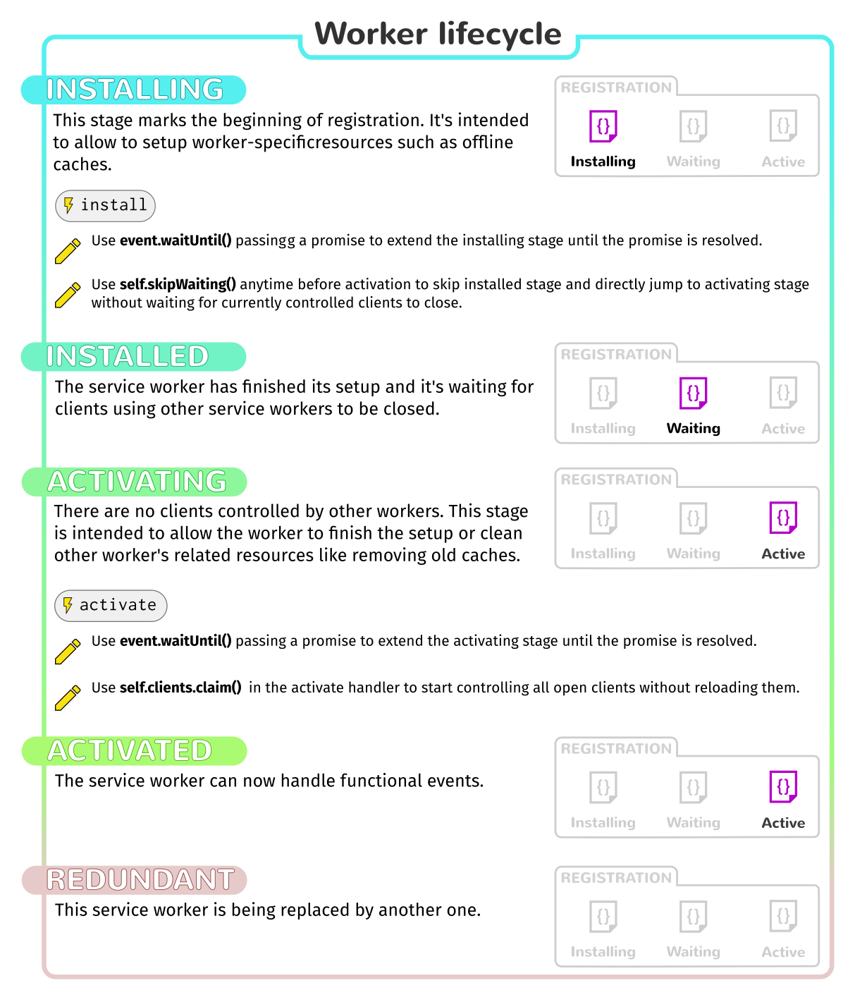

At your service!
code & resources about service workers
Overview
- What is a service worker?
- Real world applications
- More possibilities
- What is the state of the art?
What is a service worker?
A request catcher...

...and response generator.
The world without service workers
Imagine you are in the tube browsing Twitter...
You've found some interesting post and you are reading it...
Then go back to Twitter and it just crashes!

You got out of network and you can not read any more...
A future with service workers

On entering Twitter, it starts downloading some tweets...
The service worker store them for offline usage
Then go back to Twitter but this time, Twitter does not crash!
Instead, you are warned about connectivity problems...
...but your tweets are there, ready to be read!
Introducing Offline Cache API
Service Worker life cycle
- Register the service worker for a scope.
- Once all non-controlled pages are closed, activate.
Next open pages under scope will be controlled. - After attending a fetch or a message, it becomes idle.
- And eventually it will be terminated by the browser.
Other important details
- Runs on its own thread (in parallel).
- Only works on https / localhost.
- It should be placed at the root of the scope.
- It is updated on change / on demand.
- Introduction to service workers.
Real world applications
Offliner
- offliner provides a life-cycle for webapps.
- It only provides the abstract strategy.
- You provide the implementation as plugins.
- See the demo in action!
ServiceWorkerWare
- serviceworkerware ease the task of programming sw.
- Provides a pseudo-declarative syntax a-la express.js.
- Can be extended via middlewares.
- Browse an implementation of a client API
Karma SW adapter
- Karma SW adapter allows testing in a sw environment.
- The idea is to extend the activation event.
- Now it's hardly coupled to mocha, chai and sinon.
- See a working setup for serviceworkerware
More demos & sample code
More possibilities
- Web Application life-cycle
- Client side APIs
- True web applications in your mobile homescreen: as installed bookmarks!!
- Gather analytics
- Sync
- New Push API
- Cross Origin Workers?
What is the state of the art?
Browser support
- In Chrome? yes!
- In Nightly? yes \o/!
- In Firefox? kind of
- And test in Firefox OS
- Is service worker ready?
Major problems and workarounds
- No storage on Firefox! Use an offline cache.
- No
.claim()implementation on Firefox! Use reload pattern. - No dev tools on Firefox! Use Chrome
:_(

About this presentation
https://delapuente.github.io/presentations/at-your-service
Salvador de la Puente González
Thanks to:
Francisco Jordano for SWW & Mozilla Web Techonologies and Ecosystem for supporting offliner